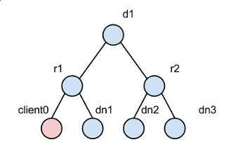

Pivotal HD 1.1.x is a full Apache Hadoop distribution with Pivotal add-ons and a native integration with the Pivotal Greenplum database.
This section includes information about the following:
- Spring Data
- HVE (Hadoop Virtualization Extensions)
- HDFS Rack Awareness
- Vaidya
- DataLoader
For information about the installation, configuration, and use of the USS component is provided in the USS chapter.
Spring Data
Spring for Apache Hadoop provides support for writing Apache Hadoop applications that benefit from the features of Spring, Spring Batch, and Spring Integration. For more information, please refer to the Spring Data official page: http://www.springsource.org/spring-data/hadoop
Installing Spring Data Hadoop
Download and copy Pivotal HD Tools Tarball to
/home/gpadmin/. Make sure the tarball has read permission for user gpadmin. To extract the PHDTools tarball execute the following command:[root@hdp2-w17 gpadmin]# chown gpadmin:gpadmin PHDTools-version.tar.gz [root@hdp2-w17 gpadmin]# ls lrt PHDToolsversion.tar.gz rw-rr- 1 gpadmin gpadmin 499930679 Mar 20 20:12 PHDTools-version.tar.gz [root@hdp2-w17 gpadmin]# sudo su - gpadmin [gpadmin@hdp2-w17 ~]$ tar xzvf PHDTools-version.tar.gz [gpadmin@hdp2-w17 ~]$ ls -lrt GPHD* drwxrwxr-x 5 gpadmin gpadmin 4096 Mar 20 00:35 PHDTools-version rw-rr- 1 gpadmin gpadmin 499930679 Mar 20 20:12 PHDTools-version.tar.gz [gpadmin@hdp2-w17 ~]$ cd PHDTools-version/spring-data-hadoop/rpm/ [gpadmin@hdp2-w17 rpm]$ ls -lrt total 1580 rw-rw-r- 1 gpadmin gpadmin 1610604 Mar 20 00:04 spring-data-hadoop-1.0.1.RC1-3.noarch.rpm rw-rw-r- 1 gpadmin gpadmin 76 Mar 20 00:44 spring-data-hadoop-1.0.1.RC1-3.noarch.rpm.md5
Installing Spring Data Hadoop through RPM
To install Spring Data Hadoop through RPM execute the following command:
[gpadmin@hdp2-w17 rpm]$ pwd /home/gpadmin/PHDTools-version/spring-data-hadoop/rpm [gpadmin@hdp2-w17 rpm]$ sudo rpm -ivh spring-data-hadoop-1.0.1.RC1-3.noarch.rpm Preparing... ########################################### [100%] 1:spring-data-hadoop ########################################### [100%] [gpadmin@hdp2-w17 rpm]$ sudo rpm -qa |grep spring spring-data-hadoop-1.0.1.RC1-3.noarch
Spring Data Hadoop
By default, Spring Data Hadoop is installed to /usr/local/gphd/ directory.
The following documentation is installed:
[gpadmin@hdp2-w17 ~]$ cd /usr/local/gphd/spring-data-hadoop-1.0.1.RC1 [gpadmin@hdp2-w17 spring-data-hadoop-1.0.1.RC1]$ ls -lrt total 36 rw-rr- 1 root root 861 Oct 11 01:32 readme.txt rw-rr- 1 root root 11357 Oct 11 01:32 license.txt rw-rr- 1 root root 1151 Mar 4 06:19 notice.txt drwxr-xr-x 2 root root 4096 Mar 20 20:49 dist drwxr-xr-x 4 root root 4096 Mar 20 20:49 docs drwxr-xr-x 3 root root 4096 Mar 20 20:49 schema drwxr-xr-x 2 root root 4096 Mar 20 20:49 samples
Please refer to the readme.txt and files within the docs/ directory to start using Spring Data Hadoop.
HDFS Rack Awareness
HDFS rack awareness is a key feature to achieve localized I/O (locality).
With respect to read and write separately, HDFS has:
- BlockPlacementPolicy for write locality: namenode will look up network topology and construct a list of chosen nodes (pipeline) for a requesting a block to locate, based on algorithms provided by a BlockPlacementPolicy.
- Block pseudo distance sort for read locality: when reading a block, after obtaining all the located blocks, namenode sorts these located blocks based on their topological distance with client. The closer nodes get higher priority for read.
Both operations need to reference network topology, which is managed by the rack awareness feature. The rack awareness feature includes:
- A topology resolving framework: when datanodes register themselves on a namenode, that namenode will resolve their network location using their host name or ip, using DNSToSwitchMapping. This is a pluggable component that allows users to define their own topology based on their network layout. The most commonly used DNSToSwitchMapping is ScriptBasedMapping, which calls a shell script.
- An in-memory topology tree: all registered datanodes' network locations are kept in a topology tree.
Problem: Ignored off-cluster clients
The problem of the current implementation is that it do not support off-cluster clients. The figure below is an example of off-cluster clients:

In this figure, node dn1 is a datanode and its network location is /d1/r1, and so on for dn2 and dn3. Node client0 is an off-cluster node, which means there is no datanode deployed on client0. In this case, client0 has no chance to register itself in the topology tree of the namenode. Therefore both read and write operations select random nodes even though dn1 is closer (more preferable) than either dn2 or dn3.This problem will cause performance issues in the following cases:
- When a mapreduce cluster is not exactly co-located: some mapreduce clusters share the same hdfs cluster with other mapreduce clusters, or in some cases a mapreduce cluster will cover several hdfs clusters. In those cases, a big portion of I/O will be off-cluster client operations which can not benefit from localized I/O.
- When a physical cluster is not dedicated to hadoop: a physical cluster may not be dedicated to hadoop and other supporting systems such as data loading tools may share the same cluster. In that case, the data loading tool can not benefit from localized I/O, even if the tool and hdfs shares the same rack/data center. The problem may even more common in virtualized environment.
Solution: Design
To tackle this problem, we changed the logic in block placement policy and block pseudo distance sort. We also resolved the network location of the client.
Resolving client location
Resolving the client location: we reused the framework that resolves datanodes. However, since we did not add client network locations into topology tree (as explained below), we have to cache client locations to avoid unnecessary resolve operations.
As a result, we introduced two LRU caches:
- A black list for those clients who have no valid location or whose locations do not share the same rack with any datanode.
- A white list opposite to the black list, for those clients who are not datanodes but share the same rack with at least one datanode.
Referring to the diagram of ignored off-cluster clients, the table below lists some examples of location cache.
Location Cache Examples | ||
HostName | Location | Cache |
client1 | d1/r1 | white list |
client2 | d2/r1 | black list |
client4 | null | black lis |
The size of LRU cache is configurable so you can limit the memory usage of namenode.
Block placement policy
The tables below demonstrate how the BlockPlacementPolicy has been changed to support non-datanode clients.
Former block placement algorithm | |
Replica | Rule |
1 | Client Local |
2 | Random node whose rack is different from replica 1 |
3 | Random node who share the same rack with replica 2 |
>=4 | Random node |
Changed block placement algorithm | |
Replica | Rule |
1 | Client Local if client is datanode, or random node who shares the same rack with client if client is not a datanode |
2 | Random node whose rack is different from replica 1 |
3 | Random node who shares the same rack with replica 2 |
>=4 | Random node |
Usage
The client rack aware feature is disabled by default. To enable, add the following to the hdfs-site.xml file:
<properties> <property> <name>dfs.rackawareness.with.client</name> <value>true</value> </property> </properties> <properties> <property> <name>dfs.rackawareness.with.client.blacklist.size</name> <description>Black list size of client cache, 5000 by default.</description> <value>5000</value> </property> </properties> <properties> <property> <name>dfs.rackawareness.with.client.cache.size</name> <description>White list size of client cache, best set it equals the size of cluster. 2000 by default.</description> <value>2000</value> </property> </properties>
Note that you need to restart DFS after changing the configuration.
Vaidya
Overview
Vaidya is a diagnostic tool installed with PHD for Map/Reduce jobs. After a job is executed successfully, it uses a job history log and job configuration information to identify any performance or scalability problems with the job. Upon execution, it provides a job analysis report indicating specific problems with the job along with the remedy to correct them. The report element includes, "rule title", "rule description", "rule importance", "rule severity", "reference details" and "remedy/prescription" to rectify the problem. The "rule severity", is a product of rule impact and the rule importance.
Note: The Vaidya tool does not analyze failed jobs either for performance or scalability problems nor for the reasons of failure.
The Vaidya tool includes diagnostic rules (also referred to as "tests") where each rule analyzes a specific problem with the M/R job. Diagnostic rule is written as a Java class and captures the logic of how to detect a specific problem condition with the M/R job. Each diagnostic rule takes job history log and job configuration information provided to it using a standard structured interface. The standard interface allows administrators and developers to independently add more diagnostic rules in the Vaidya tool.
Note that Vaidya is installed together with PHD and is by default enabled. No additional installation and configuration needed.
Note that Vaidya is not available if you are deploying a MR1-based cluster.
Installing Vaidya Files
By default, Vaidya files are installed at:
- The Vaidya JAR library is installed into
/usr/lib/gphd/hadoop-mapreduce/ - The Vaidya default test configuration file is installed into
/etc/gphd/hadoop/conf/
Enabling and Disabling Vaidya
By default, Vaidya is enabled after installation, there is normally no need to enable it manually.
Enabling Vaidya
In cases where Vaidya is not enabled and you want to enable it explicitly:
On the job tracker node, go to the PHD configuration folder (by default, /etc/gphd/hadoop/conf), and add the following lines into the file mapred-site.xml.
mapred-site.xml
<property> <name>mapreduce.vaidya.enabled</name> <value>true</value> </property> <property> <name>mapreduce.vaidya.jarfiles</name> <value>/usr/lib/gphd/hadoop-mapreduce/hadoop-vaidya-default.jar</value> </property> <property> <name>mapreduce.vaidya.testconf.file</name> <value>/etc/gphd/hadoop/conf/postex_diagnosis_tests.xml</value> </property>
Disabling Vaidya
To disable Vaidya:
Set the property mapreduce.vaidya.enabled value to be false, or remove these lines from mapred-site.xml.
- The value of property mapreduce.vaidya.enabled should be changed to point to the correct jar file you installed. By default, this is
/usr/lib/gphd/hadoop/contrib/vaidya/hadoop-vaidya-<HADOOP_PHD_VERSION>.jaror/usr/lib/gphd/hadoop-mapreduce/hadoop-vaidya-<HADOOP_PHD_VERSION>.jar. - Once you edit the xml file, restart the job history server service to ensure the change takes effect.
Using Vaidya to Analyze Jobs
To use Vaidya with PHD 1.1.x and to ensure your job history server service is running:
- Successfully run a map-reduce job for Vaidya to analyze. Refer to Pivotal HD Enterprise 1.1 Installation and Administrator Guide for instructions about how to run map-reduce job with PHD.
- Ensure your job history server service is running.
- Open the following URL in a web browser:
http://<historyserver_host>:<historyserver_port>/jobhistory
Where:
<historyserver_host>refers to the host name or IP address of the machine where you run job history server service.<historyserver_port>refers to the HTTP port job history server web where the UI listens. By default, this value is 19888. Your browser should show you the job history server UI page.
- You will see a list of jobs that have run, including the most recent job. Click the job id of any job in this list, and you should see the detailed information of the job.
On the left side of the navigation area, there should be a link called Vaidya report under the navigation item Job. Click the Vaidya report link and Vaidya will analyze the job for you and show a report.
Vaidya Configuration Rules
After you installed Vaidya with PHD, rules configuration is installed as a postex_diagnosis_tests.xml XML file, here: /etc/gphd/hadoop/conf
You can find all rules to be run on a selected job in that XML file, where each rule is defined as an XML PostExPerformanceDiagnosisTests/DiagnosticTest element, for example:
A rule in postex_diagnosis_tests.xml
<DiagnosticTest> <Title><![CDATA[Balanced Reduce Partitioning]]></Title> <ClassName> <![CDATA[org.apache.hadoop.vaidya.postexdiagnosis.tests.BalancedReducePartitioning]]></ClassName> <Description><![CDATA[This rule tests as to how well the input to reduce tasks is balanced]]></Description> <Importance><![CDATA[High]]></Importance> <SuccessThreshold><![CDATA[0.40]]></SuccessThreshold> <Prescription><![CDATA[advice]]></Prescription> <InputElement> <PercentReduceRecords><![CDATA[85]]></PercentReduceRecords> </InputElement> </DiagnosticTest>
The Title and Description elements provide a brief summary about what this rule is doing.
By editing postex_diagnosis_tests.xml, you can configure the rules.
Notes:
- Remember to backup original configuration file before editing the configuration file, invalid xml config file may cause Vaidya behavior incorrectly.
- Before you start editing rules, you should have background knowledge about XML syntax and how XML represents data (for example, what the CDATA element represents).
Disabling a Rule
Comment out or remove the whole DiagnosticTest element.
Changing the Importance of a Rule
Importance indicates how relatively important a rule is, relative to other rules in the same set. You can change the importance value by editing Importance element in the XML file. A level served as a factor which is multiplied to impact value returned by each rule.
There are three values valid for this attribute: Low, Medium and High; their corresponding values are: 0.33, 0.66 and 0.99.
In the displayed Vaidya report, there is a value named Severity for each rule. A severity level is the result of multiplying the impact value (returned by rule) and the importance factor (defined in XML file).
For example, a rule returns impact of 0.5, its importance is marked as Medium, then its severity is 0.5 * 0.66 = 0.33.
Changing Success Threshold
Each rule calculates a value between 0 and 1 (inclusively) to indicate how healthy a job is according to the given rule, this value is called impact. The smaller the impact is (that is, closer to 0), the healthier the job is.
To give a more straight forward result, you can set a threshold for each rule, therefore a rule whose impact value is larger than the threshold will be marked as "failed", otherwise, it is marked as "passed".
Note that threshold is compared with impact value, rather than severity (which means make a rule less important will not make a failed rule succeed).
You can change the threshold value by editing the SuccessThreshold element in the XML file.
Changing Input Parameters
Some rules may need additional input parameters to complete their logic. You can specify additional parameters by editing/adding elements under the InputElement element of each rule.
Other
For a full explanation and instruction about the meaning of each XML element and how to change them, refer the Apache's Official Vaidya Guide for more information.
Adding a New Rule
A Vaidya rule consists of the following two parts:
- A java class that consists of the logic of the rule
- A paragraph of XML in the configuration file
Creating a Java Binary for a New Rule
Important: This section assumes a working knowledge of how to write, compile, and package Java code.
- From where you installed PHD, download the correct
hadoop-vaidya-<HADOOP_PHD_VERSION>.jarfile (which you specified inmapred-site.xml) to your development machine, if you plan on writing Java code on another machine than the one where you installed PHD (This is a typical case). Create a java file with an IDE or editor, which defines a class that extends the
org.apache.hadoop.vaidya.DiagnosticTestclass:
myrule.javapackage com.greenplum.vaidya.rules; import org.apache.hadoop.vaidya.DiagnosticTest; import org.apache.hadoop.vaidya.statistics.job.JobStatistics; public class MyRule extends DiagnosticTest { @Override public String getReferenceDetails() { return ""; } @Override public String getPrescription() { return ""; } @Override public double evaluate(JobStatistics jobStatistics) { return 0.5; } }Edit the three methods
getReferenceDetails,getPrescriptionand evaluate to construct the logic.evaluate method should return a double value between 0.0 and 1.0 and represents the impact as the analysis result.getPrescriptionmethod should return some text providing user suggestions/remedies about how to optimize your Map/Reduce configuration accordingly.getReferenceDetailsmethod should return some text indicating the meaningful counters and their values which can help you to diagnose your Map/Reduce configuration accordingly.
Compile the java class and package compiled class to a jar file, for example,
myrule.jar. Note that you need to put the Vaidya jar file you just downloaded into your class path to make your code compile.
Creating XML Configuration For a New Rule
Add a DiagnosticTest element into the postex_diagnosis_tests.xml file (the file you set in mapred-site.xml file), according to the sample given in the configuration part. Ensure the value of ClassName element is set to be the full class name of the java rule class you just created.
Deploying files
- Upload the packaged jar file (
myrule.jarfor example) to the node where you installed PHD job tracker, and store it in a folder where hadoop service has the permission to read and load it. We recommend you place it under/usr/lib/gphd/hadoop-mapreduce/lib/ Edit
mapred-site.xml, append the jar file you just uploaded to themapred.vaidya.jar.file ormapreduce.vaidya.jarfiles property value, for example:mapred-site.xml <property> <name>mapreduce.vaidya.jarfiles</name> <value>/usr/lib/gphd/hadoop-mapreduce/hadoop-vaidya-2.0.2-alpha-gphd-2.0.1.0.jar:/usr/lib/gphd/hadoop-mapreduce/lib/myrule.jar</value> </property>
Important:
- Do not remove the default Vaidya jar file from this property, Vaidya needs this property to load basic Vaidya classes to make it run.
- Multiple jar files are separated by different separator characters on different platforms. On the Linux/Unix platform, the ":" character should be used. You can look at
theFile.pathSeparatorattribute of your java platform to ensure it. - To make your settings take affect, restart job history server service.
DataLoader
See the Pivotal DataLoader Installation and User Guide for detailed information